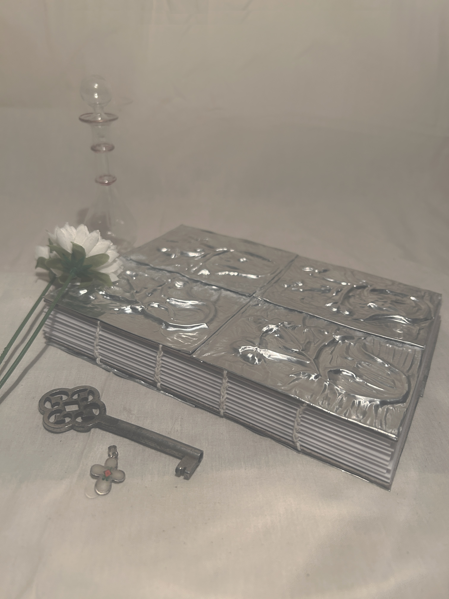
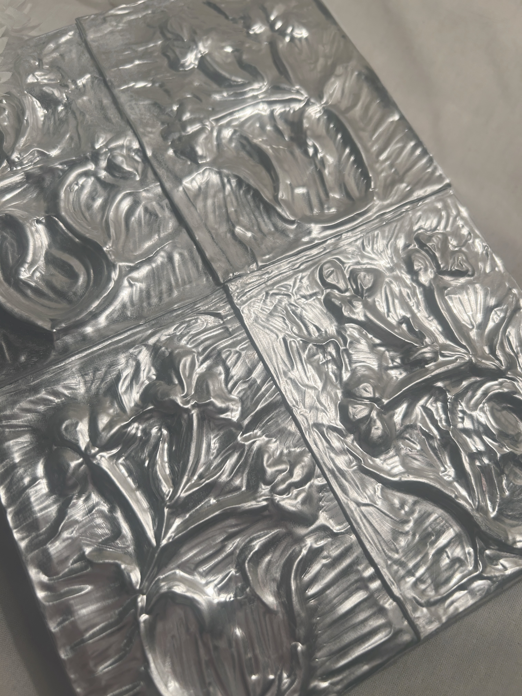
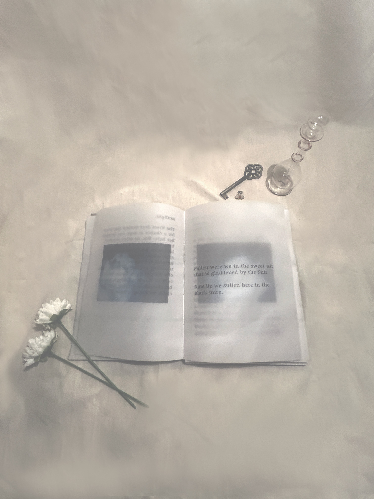
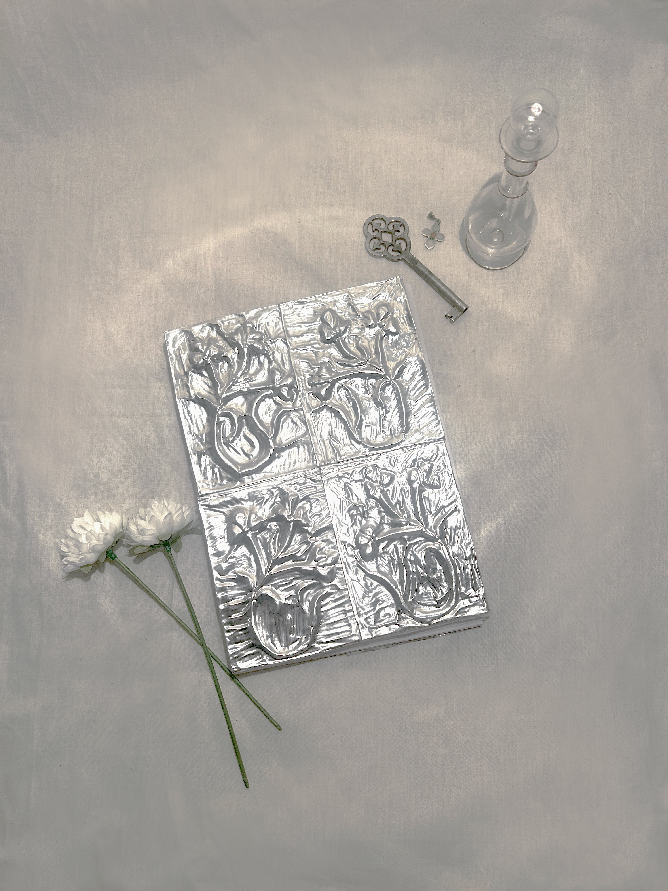

relic book

This book is a relic from a place untold. A hand-stitched book containing 3 short stories: Cloth of Clara, The Moss Corpus, and Shifting Form of Gemini. The cover is made up of four hand-embossed aluminum plates.
The book's pages, made of vellum, show 3 frame-by-frame animations. Each of which are accessible by small nfc chips embedded into that book at the beginning of each story. Use your phone's rfid reader near each chip to view the full video clips.


